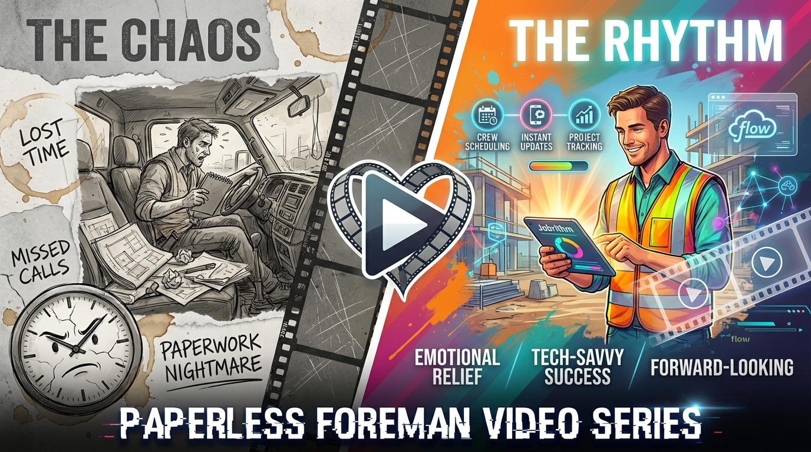

01. Content Marketing
The "Field-to-Office Friction Audit"
Visualizing the transition from manual chaos to digital roadmap.

This high-value operational playbook allows trade contractor owners to "score" their current processes across five key pillars: Planning, Scheduling, Execution, Control, and Billing. It positions JobRhythm as the bridge between current chaos and operational excellence.
Next Steps
-
Map 20-question diagnostic framework
- Design "Result PDF" template
- Create landing page with lead-capture
02. Social Media
The "Paperless Foreman" Series
Short-form video content utilizing a high-contrast "Split Screen" format to trigger emotional relief and showcase real-time visibility.
Side A
The Chaos
Messy trucks, lost notes, shortages.
Side B
The Rhythm
Tablet interface, live scheduling.
Target Metrics
03. Partnerships
Regional Material Supplier Program
Strategic alliances with lumber yards and wholesalers to place JobRhythm "Efficiency Kits" in the hands of key contractors.
The Logic
Suppliers have a vested interest in organized customers. Organized customers order accurately, pay on time, and grow faster. JobRhythm enables this cycle.
Execution Checklist
Our immediate roadmap to drive brand awareness and lead generation through operational excellence.
Launch the Audit
Finalize the "Field-to-Office Friction Audit" as the primary lead-generation asset.
Execute Video Content
Produce first three "Paperless Foreman" videos for Facebook and LinkedIn.
Pilot the Partnership
Initiate one regional supplier pilot to validate material-packing leads.
Interactive Audit Tool UI